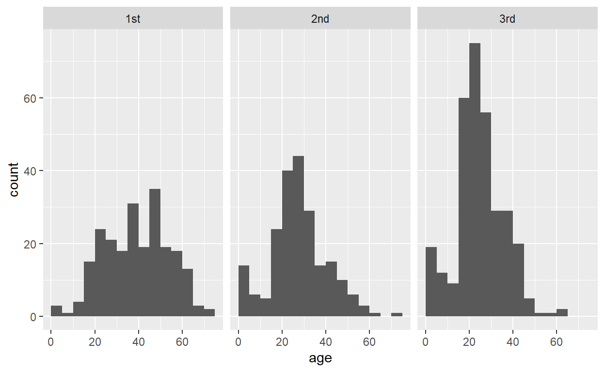
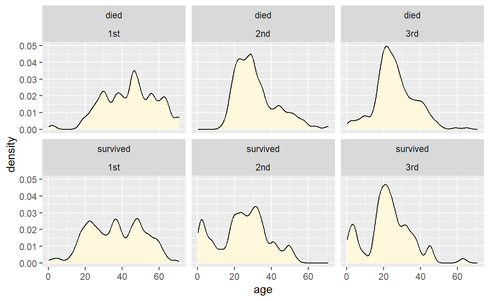
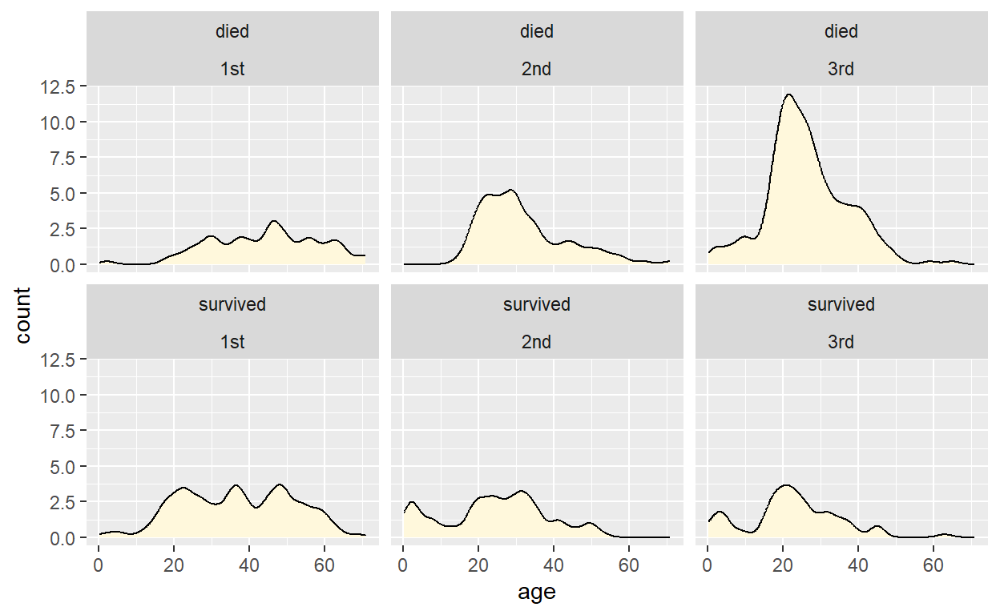

Introduction
In this worksheet, we will discuss how to display distributions of data values using histograms and density plots.
We will be using the R package tidyverse, which
includes ggplot() and related functions.
# load required library
library(tidyverse)The dataset we will be working with contains information about passengers on the Titanic, including their age, sex, the class in which they traveled on the ship, and whether they survived or not:
titanicHistograms
We start by drawing a histogram of the passenger ages (column
age in the dataset titanic). We can do this in
ggplot with the geom geom_histogram(). Try this for
yourself.
ggplot(titanic, aes(___)) +
___ggplot(titanic, aes(age)) +
geom_histogram()If you don’t specify how many bins you want or how wide you want them
to be, geom_histogram() will make an automatic choice, but
it will also give you a warning that the automatic choice is probably
not good. Make a better choice by setting the binwidth and
center parameters. Try the values 5 and 2.5,
respectively.
ggplot(titanic, aes(age)) +
geom_histogram(___)ggplot(titanic, aes(age)) +
geom_histogram(binwidth = ___, center = ___)ggplot(titanic, aes(age)) +
geom_histogram(binwidth = 5, center = 2.5)Try a few more different binwidths, e.g. 1 or 10. What are good
values for center that go with these choices?
Density plots
Density plots are a good alternative to histograms. We can create
them with geom_density(). Try this out by drawing a density
plot of the passenger ages (column age in the dataset
titanic). Also, by default geom_density() does
not draw a filled area under the density line. We can change this by
setting an explicit fill color, e.g. “cornsilk”.
ggplot(titanic, aes(___)) +
___ggplot(titanic, aes(age)) +
geom_density(___)ggplot(titanic, aes(age)) +
geom_density(fill = "cornsilk")Just like for histograms, there are options to modify how much detail
a density plot shows. A small binwidth in a histogram corresponds to a
low bandwidth (bw) in a density plot and similarly a large
binwidth corresponds to a high bandwidth. In addition, you can change
the kernel, e.g. kernel = "rectangular" or
kernel = "triangular". Try this out by using a bandwidth of
1 and a triangular kernel.
ggplot(titanic, aes(age)) +
geom_density(fill = "cornsilk", ___)ggplot(titanic, aes(age)) +
geom_density(fill = "cornsilk", bw = ___, kernel = ___)ggplot(titanic, aes(age)) +
geom_density(fill = "cornsilk", bw = 1, kernel = "triangular")Try a few more different bandwidth and kernel choices, e.g. 0.1 or 10, or rectangular or gaussian kernels. How does the density plot depend on these choices?
Small multiples (facets)
We can also draw separate histograms for passengers meeting different
criteria, for example for passengers traveling in the different classes.
Whenever we draw multiple plot panels containing the same type of plot
but for different subsets of the data, we speak of “small multiples”. In
ggplot, we generate small multiples with the function
facet_wrap(). The function facet_wrap() takes
as its argument a list of data columns to subdivide the data by. This
list is provided via the vars() function. For example,
vars(class) means draw a separate panel for each class,
vars(survived) means draw a separate panel for each
survival status, and vars(class, survived) means draw a
separate panel for each combination of class and survival status.
As an example, the following code generates small multiple histograms by class:
ggplot(titanic, aes(age)) +
geom_histogram(binwidth = 5, center = 2.5) +
facet_wrap(vars(class))
Now use the same principle to draw small multiple histograms by survival status.
ggplot(titanic, aes(age)) +
geom_histogram(binwidth = 5, center = 2.5) +
___ggplot(titanic, aes(age)) +
geom_histogram(binwidth = 5, center = 2.5) +
facet_wrap(vars(___))ggplot(titanic, aes(age)) +
geom_histogram(binwidth = 5, center = 2.5) +
facet_wrap(vars(survived))Now make a plot that breaks down the data by both survival status and class.
ggplot(titanic, aes(age)) +
geom_histogram(binwidth = 5, center = 2.5) +
facet_wrap(vars(survived, ___))ggplot(titanic, aes(age)) +
geom_histogram(binwidth = 5, center = 2.5) +
facet_wrap(vars(survived, class))Finally, do the same but drawing density plots rather than histograms.
ggplot(titanic, aes(age)) +
___ +
facet_wrap(vars(survived, class))ggplot(titanic, aes(age)) +
geom_density(fill = "cornsilk", bw = ___) +
facet_wrap(vars(survived, class))ggplot(titanic, aes(age)) +
geom_density(fill = "cornsilk", bw = 2) +
facet_wrap(vars(survived, class))Notice the difference between this plot and the corresponding histogram plot. Histograms show absolute counts whereas the density plots are normalized so that the area under the curve is 1. As a consequence, the density plot does not provide an accurate representation of the number of passengers in each grouping. This can be changed. See next section.
Manipulating stats
You may have noticed that neither geom_histogram() nor
geom_density() require you to define an aesthetic mapping
for the y variable. This is because under the hood, a
statistical transformation (called a “stat”) calculates the histogram or
density from the raw data and then sets the appropriate y mapping.
Sometimes it can be useful to access or modify this mapping directly.
We tell ggplot that we want to map a value calculated by a stat, rather
than one that is in the original data, by writing
after_stat(...) inside the aes() function. So,
for example, the default y mapping for geom_density() is
y = after_stat(density). An alternative mapping,
y = after_stat(count) scales densities by the number of
points in each grouping, thus producing something more similar to a
histogram. You can see the difference between these two choices in the
following two examples:
# use the default y mapping
ggplot(titanic, aes(age, y = after_stat(density))) +
geom_density(fill = "cornsilk", bw = 2) +
facet_wrap(vars(survived, class))
# use a modified y mapping
ggplot(titanic, aes(age, y = after_stat(count))) +
geom_density(fill = "cornsilk", bw = 2) +
facet_wrap(vars(survived, class))
The same options of after_stat(count) and
after_stat(density) exist for geom_histogram()
as well. Try this by making histograms that use the calculated density
for the y value.
ggplot(titanic, aes(age, y = ___)) +
geom_histogram(binwidth = 5, center = 2.5) +
facet_wrap(vars(survived, class))ggplot(titanic, aes(age, y = after_stat(___))) +
geom_histogram(binwidth = 5, center = 2.5) +
facet_wrap(vars(survived, class))ggplot(titanic, aes(age, y = after_stat(density))) +
geom_histogram(binwidth = 5, center = 2.5) +
facet_wrap(vars(survived, class))Now, instead, try mapping the calculated counts onto the
fill aesthetic.
ggplot(titanic, aes(age, fill = ___)) +
geom_histogram(binwidth = 5, center = 2.5) +
facet_wrap(vars(survived, class))ggplot(titanic, aes(age, fill = after_stat(___))) +
geom_histogram(binwidth = 5, center = 2.5) +
facet_wrap(vars(survived, class))ggplot(titanic, aes(age, fill = after_stat(count))) +
geom_histogram(binwidth = 5, center = 2.5) +
facet_wrap(vars(survived, class))Finally, we can make our own combination of geoms and stats, by
setting the stat argument of a geom,
e.g. stat = "density" to use the density stat. To try this
out, draw a density plot using geom_point(), and also map
the calculated density values onto the point color.
ggplot(titanic, aes(age, ___)) +
geom_point(___) +
facet_wrap(vars(survived, class))ggplot(titanic, aes(age, color = ___)) +
geom_point(stat = "density") +
facet_wrap(vars(survived, class))ggplot(titanic, aes(age, color = after_stat(density))) +
geom_point(stat = "density") +
facet_wrap(vars(survived, class))